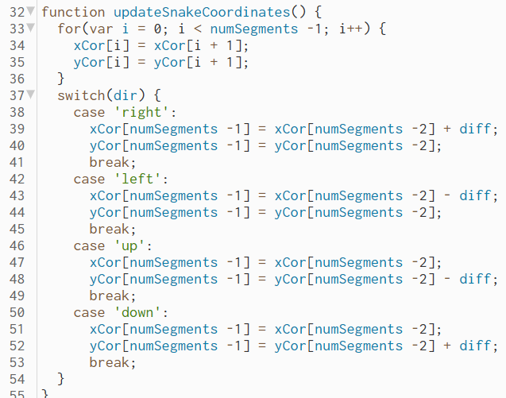

Programering af eget spil
Gruppen: Ea Witthøfft, Sara Høgh, Jens-Corneliu og Ludvig Erling
Hvad er javascript?
Javascript er et programeringsprog, som mest almindeligt bruges som en del af webbrowsere.
Javascript bruges blandt andet til at lave spil som eksemplet herunder.

Hvad er formålet med forløbet
I dette forløb skulle vi udvikle et spil ved hjælp af javascript. Dette spil skulle kunne virke med en makeymakey enhed, så
spillet ville være mere fysisk. Det spil vi valgte at lave var en version af snake, som kom så tæt på den rigtige udgave som muligt.
Dette betyder at spillet skulle inkludere en slange, som er kan bevæge sig op, ned, højre og venstre, æbler som slangen kan spise
og blive længere af og kolisionsfysik, som gør at det bliver en udfordring at vinde spillet. I følgende vil jeg gå over og forklare
de vigtigeste kodestumper der opbygger spillet.
Forklaring af kode
Først inddeles de forskellige dele af spillet i deres egne filer, for at gøre det at realisere det endelige produkt mere overskueligt.
Der blev valgt at inddele snake, fruit, index.html og sketch.
Snake har til opgave at give spilleren kontrol over slangen, opdatere dens koordinater, gøre mulighed for at slangen bliver
større når den spiser en frugt og vise spilleren, at de har tabt når
slangen rører sig selv eller et af murene.
Fruit har til opgave at give frugten tilfældige koordinater og opdatere numsegment samt dens egne koordinater når slangen spiser frugten
, så slangen bliver længere og frugten får nye
koordinater.
Index.html har til opgave at sammenflette de forskellige dele af spillet, så det kan spilles som et helt spil.
Sketch har til opgave at bestemme slangens fart, dens startposition, udseende af spillet samt tjekke for om slangen rører en frugt
eller en mur ved at opdatere dens koordinater.
[FRUGT]
Vi starter i den del af spillet, som handler om frugten.
Fra linje 1 til 7 defineres først x og y koordinaterne for frugten, dernæst bliver en funktion der har til opgave at opdatere frugtens
koordinater opstillet. I denne funktion gør floor,
så resultatet altid bliver et helt tal. random gør så et "tilfældigt" tal mellem 0 og
1 bliver dannet. (10,(width-10)/10))*10 gør så frugtens x koordinat bliver inden for spillets rammer
(skifter du width ud med height får du funktionen for frugtens y koordinat).
Funktionen tegner frugten samt gør at dens x og y koordinater er xFruit og yFruit. Udover dette gør funktionen også så når slangen rører
frugten så bliver den længere ved hjælp
af unshift kommandoen, som gør at der bliver lagt et ekstra element til listerne xCor og yCor.
Der bliver også lagt et ekstra element til numSegments samt en opdatering til frugtens
position.
[SNAKE]

Linje 1 til 4 i koden for slangen sætter 3 variabler op der bliver brugt senere i koden: var dir='right', som viser start retningen for
slangen, var xCor=[] og var yCor=[] som danner en liste
for slangens x og y koordinater.
Funktionen Keypressed() gør så når et af piletasterne er trykket, så bevæger slangen sig i retningen tasten viser. Funktionen gør også
slangen ikke kan gå den direkte modsatte vej
af sin nuværende retning med dir !='modsat retning' kommandoen.

Funktionen updateSnakeCoordinates() danner et forloop, hvor i starter på 0 og får lagt 1 til hvis i er lig numSegments minus 1.
Dette bruges i xCor og yCor variablerne for at opdatere
dem når slangen bevæger sig. Inden for funktionen er også hvordan slangen skal reagere når piletasterne trykkes. I tilfælde med 'right'
ændres kun slangens x koordinater,
hvilket gøres ved at sige at slangens nuværende koordinater er lig med slangens forrige koordinater lagt sammen med slangens fart (diff).
Funktionerne deathLoop og death er til for at slutte spillet hvis spilleren laver en fejl. I deathLoop laves et forloop så
kommandoerne nedenunder altid bliver set igennem når
spillet startes. I loopet gives tre kommandoer: hvis yCor er under 1 eller over 400, så dør slangen, hvis xCor er under 1
eller over 400, så dør slangen, hvis slangen rører sig
selv, du gættede rigtigt slangen dør. Nu kommer death funktionen ind i billedet. Death bliver kaldt hver gang slangen gør et
af ovenstående, hvilket gør så en boks med stringen "game over"
popper op på skærmen. Noloopet i slutningen af funktionen gør så funktionen ikke behøver at loope igen og igen.
[SKETCH]
I de første linjer kode af sketch dokumentet defineres 4 variabler: xPos, yPos, numSegments og diff. xPos og yPos bruges til at give
slangen en startposition når man starter spillet.
numSegments er bruges blandt andet til at definere slangens længde i segmenter, som i
dette tilfælde er 10. diff bruges til at definere slangens hastighed.
Funktionen setup indeholder 5 kommandoer: createCanvas(),frameRate(),strokeWeight(),updateFruitCoordinates() og et forloop.
CreateCanvas giver dig her et visuelt område på 400x400.
FrameRate er til for at justere hvor mange frames der bliver vist per sekund, i dette tilfælde er det 15. StrokeWeight er til for at
bestemme tykkelsen af de forskellige objekter der optræder i spillet,
altså frugten og slangen. UpdateFruitCoordinates kalder på funktionen updateFruitCoordinates(), så frugten spawner når spillet begynder.
Foorloopet bestemmer hvor slangen spawner ved hjælp
af variablerne xPos,yPos og diff.
Funktion draw har primært til opgave at tegne baggrunden samt slangen. Den har også til opgave at kalde på funktionerne
updateSnakeCoordinates, checkForFruit og deathloop så skærmen
kan omtegnes hver gang der sker noget.
[INDEX.HTML]
Inde på html siden linkes alle javascript delene fruit, snake og sketch, så spillet kan fungere.
Flowchart af spil
Herunder ses et flowchart af spillet, så de forskellige funktioner bliver lettere at visualisere.